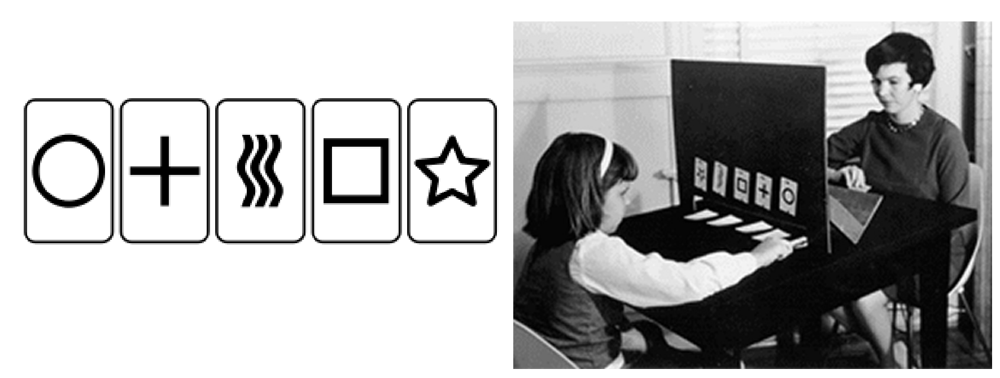
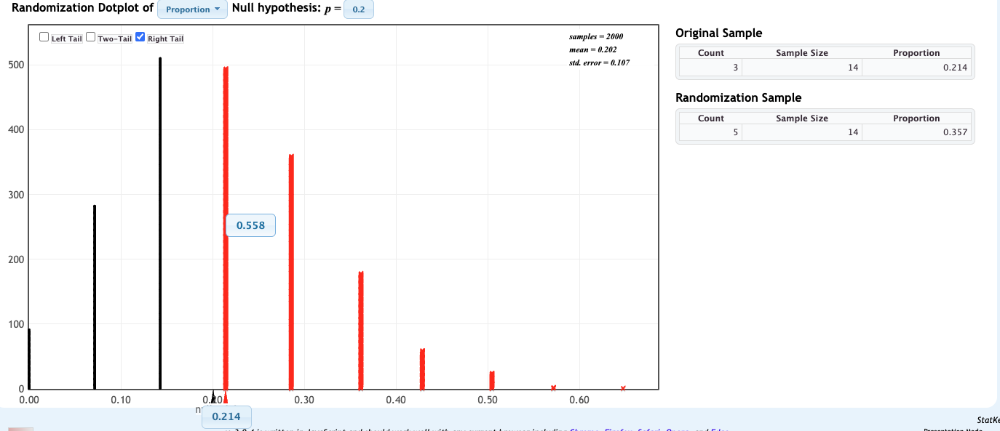
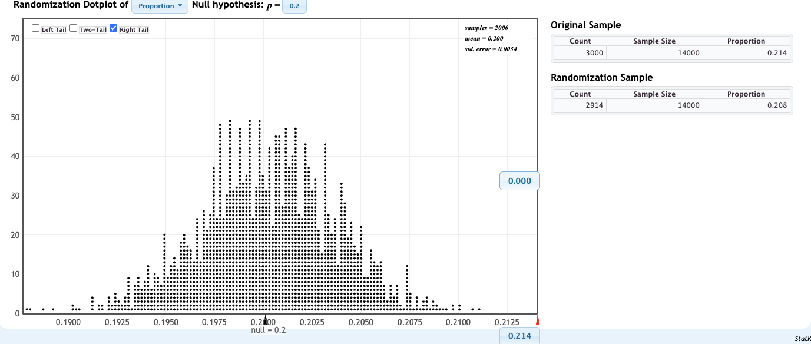
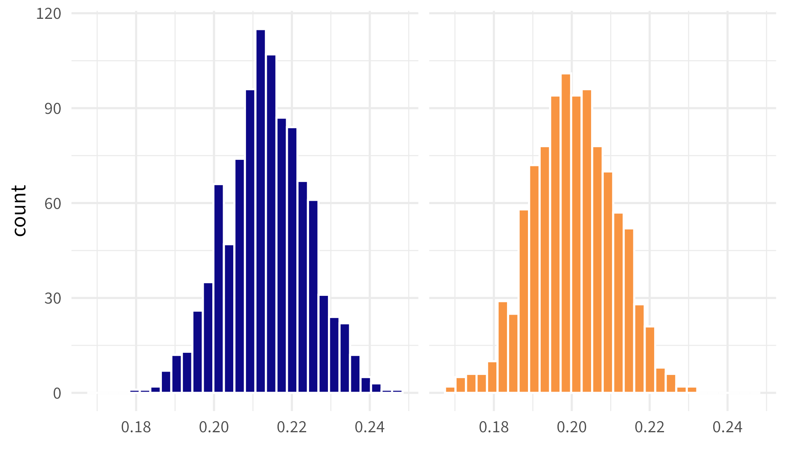
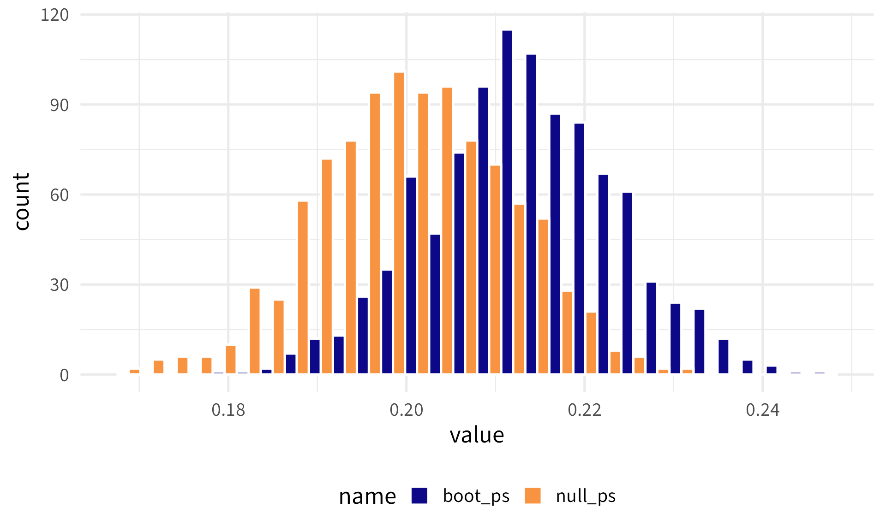
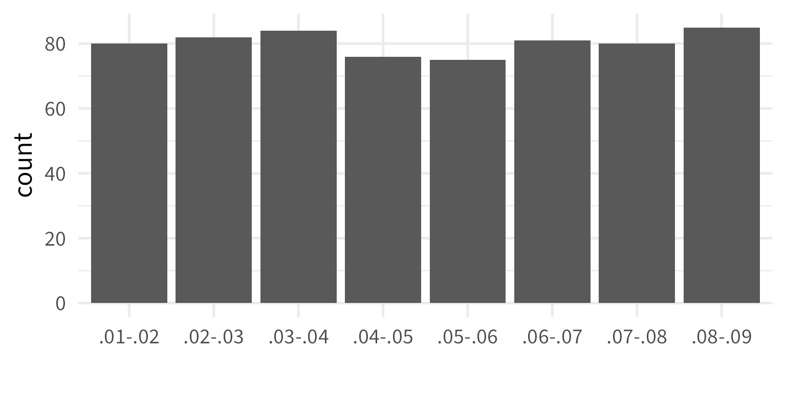
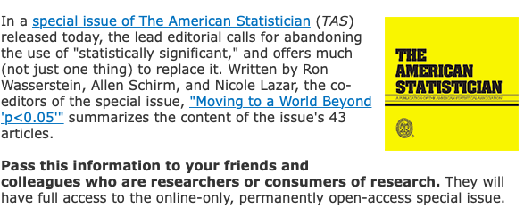

16: Hypothesis Test Controversies + Exam II Review
Stat120 | Fall 2025
Prof Amanda Luby
Today
- “Warm Up” after break
- Multiple Testing
- Publication Bias
- Exam II Review
Warm Up
Is there such a thing as “Extrasensory Perception” (ESP)?
Idea: subjects draw a card at random and telepathically communicate this to someone who then guesses the symbol
Let’s say we run this experiment with 14 subjects and 3 get the answer right.
On your own…
Write out the population parameter, sample statistic, \(H_0\) and \(H_A\).
- Population Parameter: \(p\), the proportion of correctly guessed cards in the population
- Sample Statistic: \(\hat{p}\), the proportion of correctly guessed cards in our sample (3/14)
- \(H_0: p = .2\)
- \(H_A: p > .2\)
Results
Oops! I meant that there were 1400 subjects and 300 got the answer right
Oops! I meant that there were 14000 subjects and 3000 got the answer right

Sample Size has a huge impact on “significance”
With small samples, even large effects might not be statistically significant.
With large samples, even very small effects can be statistically significant.
This is one reason why some people prefer “discernible” to “significant”
Confidence Interval
Build using a bootstrap distribution: sample from the original data with replacement to create a bunch of new samples. Compute the sample proportion in each, and make a plot of the sample proportions to create the bootstrap distribution.
14 subjects: [0, .429]
1400 subjects: [.194, .235]
14000 subjects: [.208, .221]
Which is the bootstrap distribution and which is the null distribution? (1400 subjects example)
The two distributions live in the same “world”
Multiple Testing
Multiple Testing
Whenever you do a single hypothesis test, your Type I Error rate is \(\alpha\) (let’s say 5%).
If you do lots of hypothesis tests, your Type I Error rate is much higher!
In fact, the probability of making at least Type I error among \(k\) tests is \(1-(.95)^k\)
If you do 10 tests, your overall Type I Error rate is 40%
If you do 100 tests, your overall Type I Error rate is 99%!
Need to do a multiple testing correction in these cases. Plan the number of tests in advance and adjust your original \(\alpha\) accordingly
Publication Bias
A 2017 paper in the Journal of Clinical Epidemiology looked at published p-values in 120 medical research articles published in top medical journals in 2016.
Theoretically, the distribution of p-values should be uniform:

Instead, the distribution looked like:

Six principles from the ASA statement
- P-values can indicate how incompatible the data are with a specified statistical model.
- P-values do not measure the probability that the studied hypothesis is true, or the probability that the data were produced by random chance alone.
- Scientific conclusions and business or policy decisions should not be based only on whether a p-value passes a specific threshold.
- Proper inference requires full reporting and transparency.
- A p-value, or statistical significance, does not measure the size of an effect or the importance of a result.
- By itself, a p-value does not provide a good measure of evidence regarding a model or hypothesis.
43 articles and over 400 pages of opinions and suggestions for ways to move forward
Exam II Review
Topics/questions from daily prep (as of ~45 minutes before class)
- Does rejecting the null hypothesis mean the alternative hypothesis is true?
- when to trust p-value versus confidence interval
- differences between when to use sampling distribution, bootstrap distribution and randomization distribution
- how to interpret p-value again
- bootstrap distributions
- hypothesis tests
- How CI is calculated
- solve more exam-style questions
- hypothesis testing setup for trickier ones
- Is there a way to calculate/guess the p-value from a graph without R/Statkey?
- When to use a confidence interval vs. Hypothesis
- What unit do you put on an interpretation of a CI bootstrapped difference in proportions?
Practice Q’s
| Topic | Question/Answer writer | Proofreader |
|---|---|---|
| Hypothesis test for difference in means | 8 | 1 |
| Hypothesis test for difference in proportions | 7 | 2 |
| Hypothesis test for correlation | 6 | 3 |
| Type I vs Type II error | 5 | 4 |
| Confidence interval for difference in proportions | 4 | 5 |
| Confidence interval for difference in means | 3 | 6 |
| Connection between confidence interval and hypothesis testing | 2 | 7 |
| Multiple Testing | 1 | 8 |